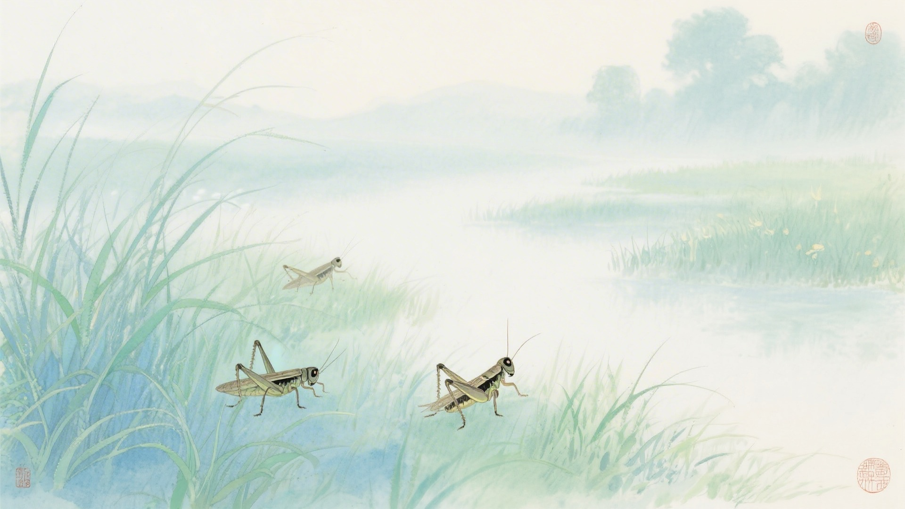
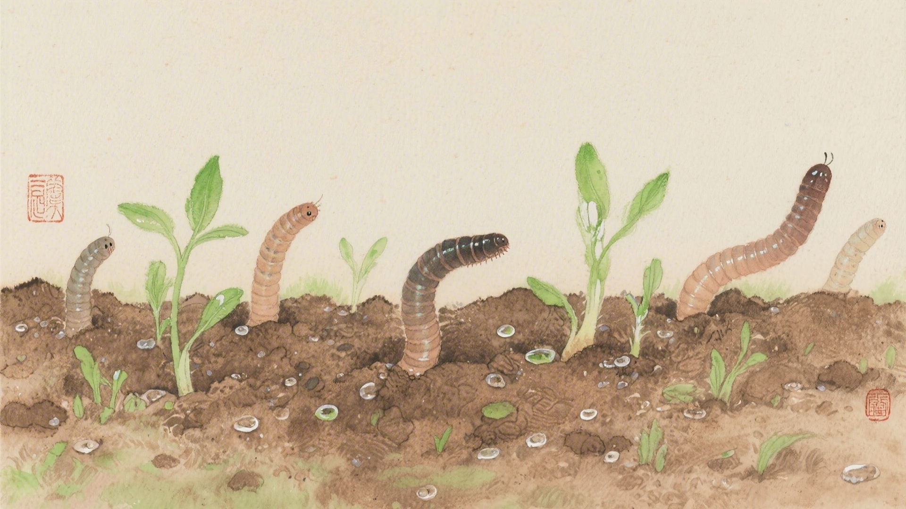
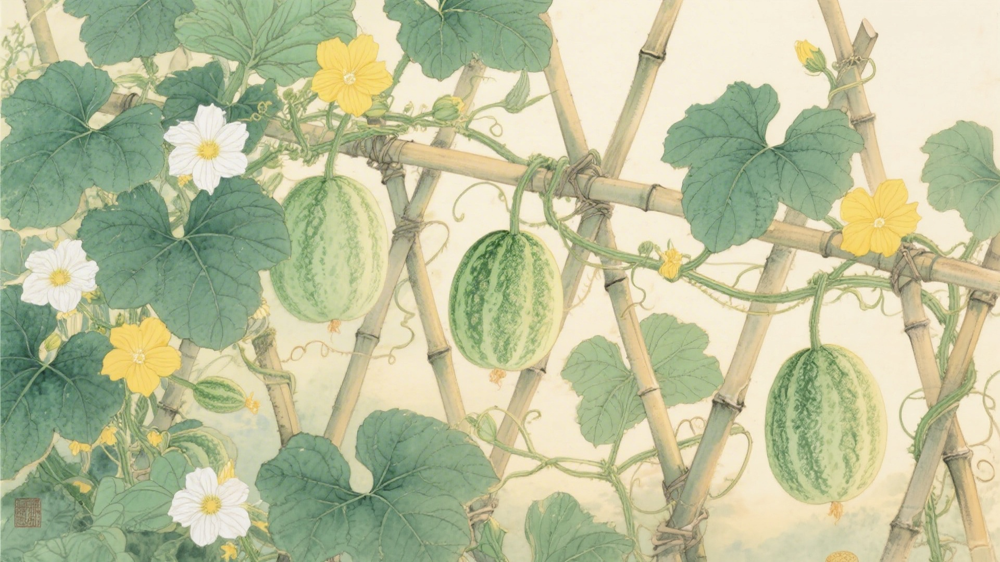
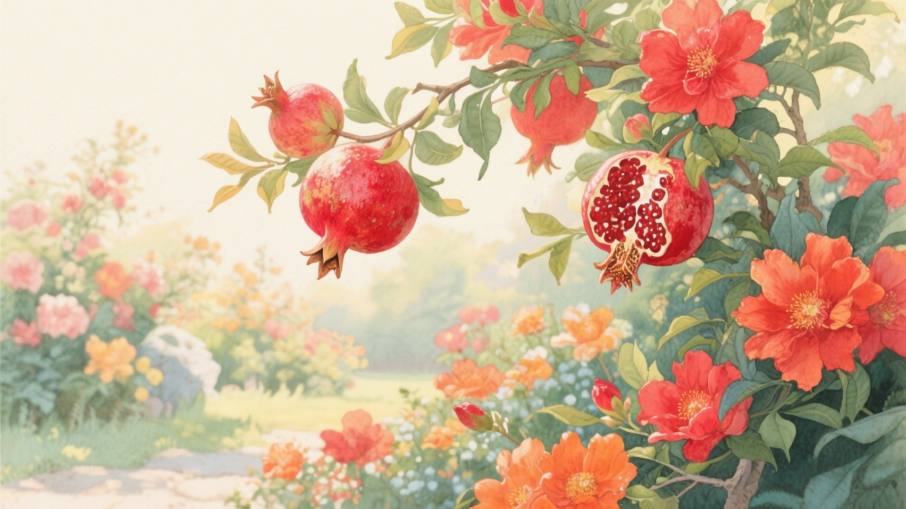
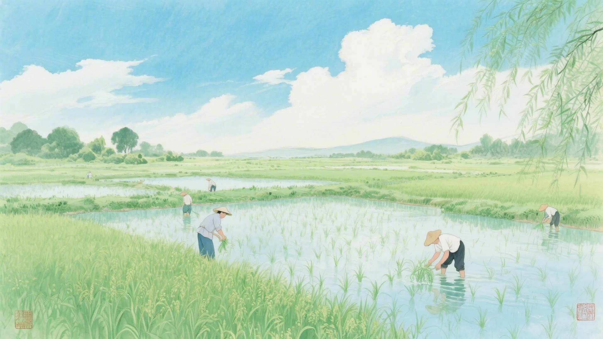

《中国传统色：故宫里的色彩美学》一书中为什么把下面这些颜色归入立夏节气？
青粲、翠缥、人籁、水龙吟
地籁、大块、养生主、大云
溶溶月、绍衣、石莲褐、黑朱
朱颜酡、苕荣、檎丹、丹罽
立夏来了，蝼蝈开始叫，蚯蚓钻出土，王瓜藤蔓攀爬。古人说立夏有三候：蝼蝈鸣，蚯蚓出，王瓜生。这十六种颜色，便从这三候里来。
夏天不是突然来的。先是虫子叫了，然后蚯蚓出来了，再然后藤蔓爬上架子。颜色也跟着换，青的变翠了，白的变黄了，像是要把春天收起来，换上夏天的衣裳。
对应：立夏节气一候"蝼蝈鸣"的起、承、转、合四色。
色彩意象：蝼蝈初鸣，夏声渐起。
从浅青到深青，是蝼蝈从沉默到鸣叫的声音变化，也是立夏时节清晨、水面、林间层层叠叠的青绿色彩。

对应：立夏节气二候"蚯蚓出"的起、承、转、合四色。
色彩意象：蚯蚓出土，大地苏醒。
这一组土黄灰色系，是蚯蚓钻出土时翻动的泥土颜色，也是立夏时节大地从沉睡中苏醒的色彩。

对应：立夏节气三候"王瓜生"的起、承、转、合四色（其一）。
色彩意象：王瓜藤蔓攀爬，果实渐熟。
这一组黄褐色系，是王瓜从开花到结果的色彩变化，从淡黄的花到褐黄的果，再到深红的籽。

对应：立夏节气三候"王瓜生"的起、承、转、合四色（其二）。
色彩意象：夏日花开，红艳热烈。
从粉红到深红，是初夏石榴花、凌霄花竞相绽放的绚烂，也是立夏时节最热烈奔放的色彩。

立夏这天，江南有称人的习俗。人往秤上一站，斤两报出来，夏天就正式开始了。颜色也有分量，青的轻，红的重，像是夏天比春天沉甸甸一些。

颜色也懂得换季。春天的颜色收进箱底，夏天的颜色拿出来晾晒。青的晒得更翠，红的晒得更艳，黄的呢，晒得像麦穗一样饱满。
（以上解读不代表原书观点）